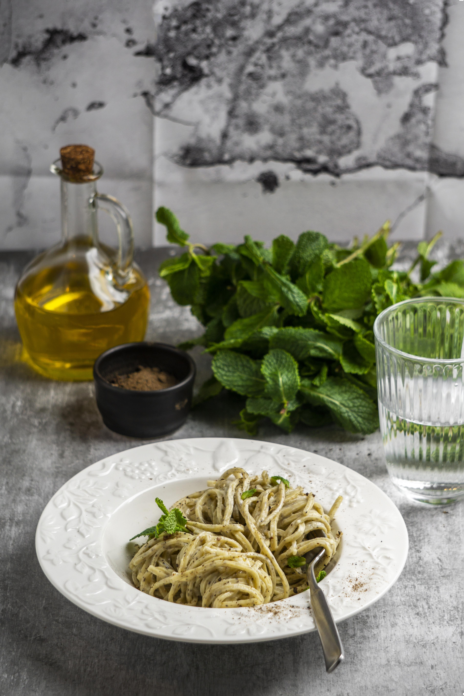

Spagetti Aglio e Olio
Description
A quick and flavorful Italian pasta dish made with garlic, olive oil, and a touch of chili — perfect for a weeknight meal.
Ingredients
- 200g (7 oz) spaghetti
- 4 garlic cloves, thinly sliced
- 1/4 cup olive oil
- 1/2 tsp red pepper flakes (optional)
- Salt, to taste
- Fresh parsley, chopped (for garnish)
- Grated Parmesan (optional)
Steps
- Cook spaghetti in salted boiling water until al dente. Reserve 1/2 cup of pasta water. Drain.
- In a large skillet, heat olive oil over medium heat.
- Add sliced garlic and red pepper flakes. Sauté until garlic is golden (not brown).
- Add cooked spaghetti and reserved pasta water to the skillet. Toss well.
- Season with salt and sprinkle chopped parsley.
- Serve hot, topped with Parmesan if desired.
Bon appétit :)